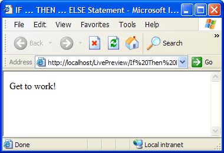

Making Statements Conditional
The most common and useful conditional statement in the Xbasic language uses the IF ... THEN ... ELSE ... END IF syntax. The statement begins by testing whether an expression is True (evaluates to .T.). If the expression is True, the Application Server executes the statement after the THEN clause. If the expression is False (.F.), the Application Server executes the statement after the ELSE clause.
The following example uses the DATE() function to return the current date. It then uses the CDOW() function to determine if the current day is "Saturday".
Using the IF ... THEN ... ELSE Statement
Create a new A5W page with the following content.
<html> <head> <meta name="generator" content="Alpha Anywhere HTML Editor"> <title>IF ... THEN Statement</title> </head> <body> <%a5 dim dCurrentDate as D dim cDayOfWeek as C dCurrentDate = date() cDayOfWeek = cdow(dCurrentDate) if (cDayOfWeek = "Saturday") then ? "Time to take a break!" else ? "Get to work!" end if %> </body> </html> |
Note in this example.
The case of Xbasic language elements is irrelevant. The words "if", "If", and "IF" have the same effect.
If the cDayOfWeek variable is equal to "Saturday", then the script prints the message "Time to take a break!". Otherwise, it prints the message "Get to work!".
Click File > Save As to save your page as "IF THEN Statement".
Click
 to run the page in Live Preview. The page should look like this.
to run the page in Live Preview. The page should look like this.
Testing whether two values for equality is one way of generating True or False. You can also have logical variables that contain either the True or False value. In Xbasic you use .T. to say "True" and .F. to say "False".
The following example shows how to use a logical value in an IF ... THEN ... ELSE statement.
Create a new A5W page with the following content.
<html> <head> <meta name="generator" content="Alpha Anywhere HTML Editor"> <title>IF ... THEN ... ELSE Statement</title> </head> <body> <%a5 dim lTodayIsSaturday as L lTodayIsSaturday = .F. if lTodayIsSaturday = .T. then ? "Time to take a break!" else ? "Get to work!" end if %> </body> </html> |
Since lTodayIsSaturday is false (.F.), the page displays "Get to work!".
Click File > Save As to save your page as "IF THEN ELSE Statement".
Click
to run the page in Live Preview. The page should look like this.

Thus far, you have tested to see if values were equal to set a True or False condition. You can also make tests with inequalities. Alpha Five supports the following operators.
Operators | Meaning |
> | Greater than |
>= | Greater than or equal |
< | Less than |
<= | Less than or equal |
<> | Not equal |
With these operators you can do more sophisticated tests, particularly of numeric data. Note : You can compare character strings also.
Create a new A5W page with the following content.
<html> <head> <meta name="generator" content="Alpha Five HTML Editor"> <title>Understanding Inequalities</title> </head> <body> <%a5 dim nMilesPerGallon as N dim cYourName as C MilesPerGallon = 15 if (nMilesPerGallon < 25) then ? "Maybe you should think about buying a new car.<br>" else ? "Start driving!<br>" end if nMilesPerGallon = 30 if (nMilesPerGallon > 25) then ? "Even this gas is expensive.<br>" else ? "Buy a bicycle!<br>" end if nMilesPerGallon = 12 if (nMilesPerGallon <= 12) then ? "You must be driving a truck.<br>" else ? "Start driving!<br>" end if nMilesPerGallon = 50 if (nMilesPerGallon >= 50) then ? "You must be driving a hybrid.<br>" else ? "Start driving!<br>" end if cYourName = "Humbert" if (cYourName <> "Alfred") then ? "You must be Humbert!.<br>" else ? "Hello Albert!<br>" end if %> </body> </html> |
Inequalities that test whether two character values are different (particularly different from NULL "") are quite common.
Click File > Save As to save your page as "Understanding Inequalities".
Click
to run the page in Live Preview. The page should look like this.
ANDandOROperators>Using the .AND. and .OR. Operators
When you combine two or more tests of equality you must combine them with a logical operator. The two most common logical operators are Logical .AND. and Logical .OR. (see also Logical .NOT. and Logical .XOR.). The .AND. and .OR. operators combine two logical values and produce a third, which provides the ultimate True or False value.
First Value | Second Value | Operator | Result |
True (.T.) | True (.T.) | .AND. | True (.T.) |
True (.T.) | False (.F.) | False (.F.) | |
False (.F.) | True (.T.) | False (.F.) | |
False (.F.) | False (.F.) | False (.F.) | |
True (.T.) | True (.T.) | .OR. | True (.T.) |
True (.T.) | False (.F.) | True (.T.) | |
False (.F.) | True (.T.) | True (.T.) | |
False (.F.) | False (.F.) | False (.F.) |
As you can see the .AND. operator requires both values to be True before it produces a True result. The .OR. operator requires just one True value to produce a True result.
Create a new A5W page with the following content.
<html> <head> <meta name="generator" content="Alpha Five HTML Editor"> <title>Using .AND. and .OR.</title> </head> <body> <%a5 dim nGrade as N dim nUpperLimit as N = 90 dim nLowerLimit as N = 80 nGrade = 89 ' in this case both tests must be true to get a B grade if (nGrade >= nLowerLimit) .and. (nGrade < nUpperLimit) then ? "You get a B.<br>" else ? "You get some other grade.<br>" end if ' in this case only one test must be true to not get a B grade if (nGrade < nLowerLimit) .or. (nGrade >= nUpperLimit) then ? "You get some other grade.<br>" else ? "You get a B.<br>" end if %> </body> </html> |
As you can see, to get a B, your grade must be greater than or equal to 80 and less than 90.
Click File > Save As to save your page as " Using AND OR ".
Click
to run the page in Live Preview. The page should look like this.
_THEN_Statements>Nested IF ... THEN Statements
When you write an IF ... THEN ... ELSE but have additional conditions to test, you can write something like this:
if (nGrade >= 90) .and. (nGrade < 100) then ? "You get an A.<br>" else if (nGrade >= 80) .and. (nGrade < 90) then ? "You get a B.<br>" else if (nGrade >= 70) .and. (nGrade < 80) then ? "You get a C.<br>" else ? "You get some other grade.<br>" end if end if end if |
As you can imagine, after 3 or more levels of test the statement becomes rather complex. Usually, these statements are rewritten as follows:
if (nGrade >= 90) .and. (nGrade < 100) then ? "You get an A.<br>" elseif (nGrade >= 80) .and. (nGrade < 90) then ? "You get a B.<br>" elseif (nGrade >= 70) .and. (nGrade < 80) then ? "You get a C.<br>" else ? "You get some other grade.<br>" end if |
You can have many elseif clauses.
Create a new A5W page with the following content.
<html> <head> <meta name="generator" content="Alpha Five HTML Editor"> <title>Nested IF ... THEN Statements</title> </head> <body> <%a5 dim dCurrentDate as D dim cDayOfWeek as C dCurrentDate = date() cDayOfWeek = cdow(dCurrentDate) if cDayOfWeek = "Sunday" then ? "Time to rest" elseif cDayOfWeek = "Monday" then ? "Five days until Saturday" elseif cDayOfWeek = "Tuesday" then ? "Four days until Saturday" elseif cDayOfWeek = "Wednesday" then ? "Three days until Saturday" elseif cDayOfWeek = "Thursday" then ? "Two days until Saturday" elseif cDayOfWeek = "Friday" then ? "One day until Saturday" elseif cDayOfWeek = "Saturday" then ? "Time to do home chores" else ? "You must have 8 days in your week!" end if %> </body> </html> |
As you can see, to get a B, your grade must be greater than or equal to 80 and less than 90.
Click File > Save As to save your page as " Using AND OR ".
Click
to run the page in Live Preview. The page should look like this.
IF ... THEN ... ELSE statements become tedious when you have more than two alternatives. The SELECT CASE language element provides a much easier way to test for multiple conditions.
The SELECT ... CASE statement allows you to test any number of expressions. When the Application Server finds an expression that evaluates to True (.T.), it executes the statements immediately following, up to but not including the next CASE statement.
Create a new A5W page with the following content.
<html> <head> <meta name="generator" content="Alpha Five HTML Editor"> <title>Using SELECT ... CASE</title> </head> <body> <%a5 dim dCurrentDate as D dim cDayOfWeek as C select case cDayOfWeek = "Sunday" ? "Time to rest" case cDayOfWeek = "Monday" ? "Five days until Saturday" case cDayOfWeek = "Tuesday" ? "Four days until Saturday" case cDayOfWeek = "Wednesday" ? "Three days until Saturday" case cDayOfWeek = "Thursday" ? "Two days until Saturday" case cDayOfWeek = "Friday" ? "One day until Saturday" case cDayOfWeek = "Saturday" ? "Time to do home chores" case else ? "You must have 8 days in your week!" end select %> </body> </html> |
Note in this example.
The CASE ELSE statement is optional. If present, it contains the code to execute if no other expressions have evaluated to True.
Click File > Save As to save your page as "Using SELECT CASE".
Click
to run the page in Live Preview. The page should look like this.
See Also